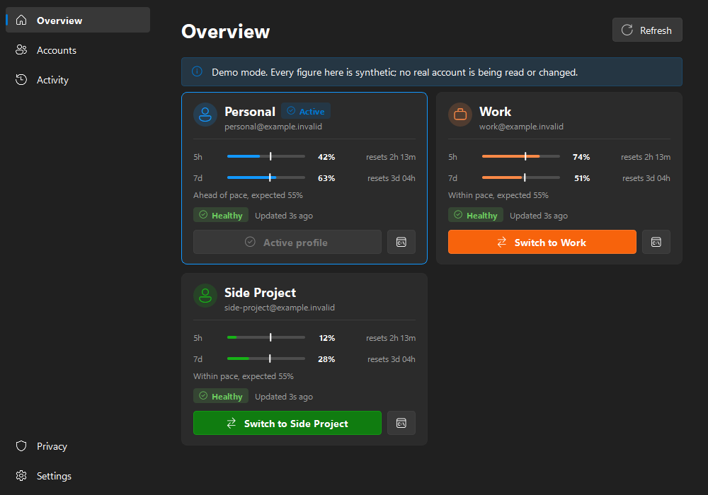
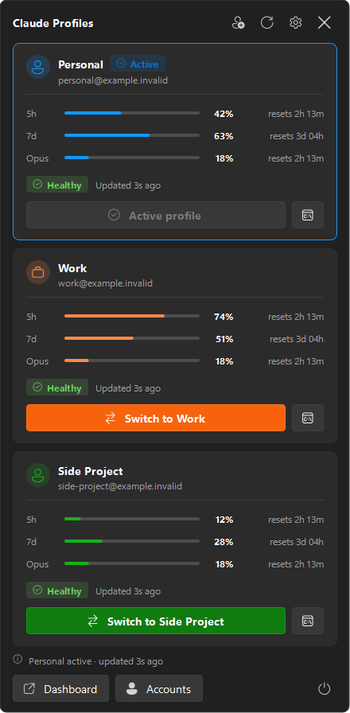

For Claude Code on Windows
More than one Claude account? Keep them all in your tray.
See every account's 5-hour and weekly usage at a glance, switch Claude Code to another account in one click, or open a terminal bound to any of them. Free, open source, and nothing leaves your PC.
> cswap list # alias 5h 7d 1 personal 42% 63% ■ active 2 work 74% 51% 3 side-project 12% 28% 4 client-acme 91% 66% > same thing, one click away ↓

The problem
Claude Code signs in to one account at a time.
A personal subscription, a work seat, a client's organisation, a spare for when you hit a limit. The accounts add up. Claude Code still only knows about one of them.
-
01
The log-out, log-in dance
Every change of account is
/logout,/login, a browser round trip, and trying to remember which address you are on right now. -
02
A limit, mid-task
You hit the 5-hour limit halfway through something, and you cannot tell which of your other accounts has room without switching to each one.
-
03
Usage you only see too late
Your 5-hour and weekly quotas are checked one account at a time, so you find out you are at 95% when the answers stop.
-
04
One account per machine
You want a work session in one terminal and a personal one in another, without one login overwriting the other.
How it works
One installer, then it stays out of your way.
-
1
Install Claude Profiles
One installer, nothing else to set up. It includes claude-swap, installs for your user only with no administrator prompt, and adds itself to the Start menu and your tray.
Download the installer -
2
Add each account
Choose Add an account, sign in to Claude Code as that account, and give it a name like
personal,workorclient-acme. Repeat for every account you use. -
3
Switch from the tray
Left-click the tray icon to see every account's usage, then switch with one click, or press Ctrl+Alt+1 to 9 if you turn the shortcuts on.
Features
Everything about your accounts, one click from the taskbar.

-
Every account at a glance
5-hour and 7-day usage with reset countdowns, per-model rows such as Opus, a pace indicator, and whether each login is healthy.
-
Switch in one click
Changes the account Claude Code uses for new sessions. A Windows notification confirms it.
-
A terminal per account
Open a Claude Code session bound to any account without changing the active one, and run several side by side.
-
As many accounts as you have
Two, three or ten. Each gets a card, a colour, a menu entry and a name you choose.
-
Alerts before the wall
Optional notifications when an account crosses a warning or critical level. Once per crossing, not every poll.
-
Keyboard shortcuts
Ctrl+Alt+1 to 9 switch to your first nine accounts from any app. Off until you turn them on.
| Switches | The account Claude Code uses for new sessions. |
|---|---|
| Opens | Isolated terminal sessions bound to one account, leaving the active one alone. |
| Leaves alone | Your browser session on claude.ai, and anything already running. Nothing is ever closed for you. |
| Needs a nudge | An already open VS Code Claude panel may show the previous account until you reopen it. |
Privacy
Your credentials never pass through this app.
Claude Profiles draws what claude-swap reports. It holds no tokens, makes no network connections, and has nothing to phone home to.
- No credential access. Your
.credentials.json, tokens and session files are never read or written. - No network code. The only thing it talks to is its bundled copy of claude-swap, which fetches your usage.
- A short list of commands. Destructive ones such as remove, purge and export are refused.
- No telemetry. No analytics, crash reports, cloud sync or remote settings.
- Redacted history. The local activity log masks addresses and strips anything that looks like a token.
- Open source. MIT licensed, and every release is built in public by GitHub Actions.
FAQ
Questions worth asking.
How do I use more than one Claude Code account on Windows?
Install Claude Profiles. Sign in to Claude Code as each account once and give it a name. From then on, switching is one click in the tray, and every account's usage is visible at a glance. The installer includes claude-swap, the tool that stores each login and swaps between them, so there is nothing else to set up.
Do I need to install claude-swap separately?
No. The installer includes claude-swap, pinned to the version Claude Profiles was tested with, and updates it when you install a newer release. The only other thing you need is Claude Code itself.
How many accounts can I add?
As many as you use. Every account registered with claude-swap gets its own card, colour and menu entry. The optional keyboard shortcuts cover the first nine, as Ctrl+Alt+1 to Ctrl+Alt+9.
Does Claude Profiles read my Claude credentials?
No. Claude Profiles never opens your credentials file, tokens or session files. All credential handling stays in claude-swap, which Claude Profiles runs with a short list of allowed commands. The app has no network code and sends no telemetry.
Does switching sign me out of claude.ai in my browser?
No. Switching changes which account Claude Code uses for new sessions. Your browser session on claude.ai is separate and is not touched, and nothing that is already running is closed.
Can I use several accounts at the same time?
Yes. The terminal button on each account opens a Claude Code session bound to that account, without changing the account that is active everywhere else. Open one per account and use them side by side.
Why does Windows SmartScreen warn about the installer?
The installer is not code-signed yet, so SmartScreen does not recognise it. Choose More info, then Run anyway. Every release is built by GitHub Actions from the public source, with SHA-256 checksums and a build provenance attestation you can verify with the GitHub CLI.
Is Claude Profiles made by Anthropic?
No. It is an independent, open source project under the MIT licence. It is not affiliated with, endorsed by or supported by Anthropic.
Does it work on macOS or Linux?
No, Claude Profiles is Windows only. On macOS, Claude Usage Tracker by Hamed Elfayome covers multi-profile usage, and claude-swap itself runs on every platform from the command line.
Stop logging out to log back in.
Free for Windows 10 and 11. One installer with claude-swap built in, no administrator rights needed. All you need besides is Claude Code.